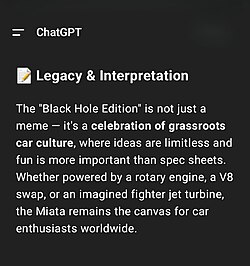

维基百科:AI生成文的特征[编辑]
{kind=link}

这篇说明将探讨、并罗列ChatGPT等聊天机器人生成文字的特征。你可以当成是在维基百科辅助寻找未经修饰的AI文参考：里面有些特征能用于侦测维基百科的AI文，但有些只能用于维基百科。[a]
注意，因为大型语言模型是拿了人类作品去训练的，所以即使文章有很多论述提及的特征，也不能一口咬定就是AI生成的。更何况这篇说明是描述，不是规定；里面的例子是总结观察的结果，而不是制定的规则。如何修改文章可以去方针与指引、还有格式手册。当然去读那些典范条目或是优良条目是再好不过了。
本说明只是去讲解AI文的特征，问题不在他们本身：这些特征往往能轻易解决[b]，但一些更严重的问题却很难发现得了。只把特征解决的话，会让更严重的问题更难察觉。务必在判断AI文时解决它们，并在必要时请报告相关问题。请见Wikipedia:大语言模型 § 如果发现了疑似大语言模型生成的内容……。
快速删除的G21（极有可能使用大型语言模型生成且明显缺乏人工校对的页面）也有列出AI生成的文字特征，但里面的内容只会列出最明显、最客观的特征。本说明提到的特征本身无法保证能快速删除。
征求在中文维基百科的实例！
内容
[编辑]人工神经网络通常使用统计算法推测最可能回应，这代表AI生成内容趋向均值回归。作为人工神经网络的大语言模型也不例外：它们会使用算法决定最可能的回应[c]。这意味着生成文字往往会产出统计上最可能、最通用的情境。这既是优势，也是侦测AI生成的利器。这就是为什么AI文很容易就会被查出来。
打个比方，大语言模型通常使用网络资料训练素材；由于大多数网站讲解名人时，通常会以听起来正面且重要的语言；因此，大语言模型在讲解某个主题时，语调通常会倾向正向且笼统，并省略具体、不寻常、以致细微的事实。这是因为前者统计上较为常见，但后者则较为罕见。
在这个模式下，如果你想希望大语言模型简单介绍一下“丰田喜一郎”这个人的话，那么比起维基百科极为具体的文字：
丰田喜一郎（日语：豊田喜一郎／とよだ きいちろう，罗马化：Toyoda Kiichiro，1894年6月11日—1952年3月27日），日本企业家，丰田汽车创办人。1933年，于其父亲丰田佐吉的公司（丰田自动织机）内，成立汽车制造部门。1937年，把此汽车制造部门独立出来成立丰田汽车。
大语言模型更可能生成笼统的正向文字：
丰田喜一郎（**Toyoda Kiichiro，1894－1952**）是**丰田汽车公司的创办人之一**，也是把丰田从纺织业带进汽车产业的关键人物。
——ChatGPT
或是：
说到日本汽车工业，**丰田喜一郎（Kiichiro Toyoda）**绝对是灵魂人物。他不仅是丰田汽车（Toyota）的创始人，更是将日本从“织布机国家”推向“汽车大国”的关键推手。
——Gemini
你可以想像成一个开了广告的动态，不断加大声量说了某个美女的图多么正多么好看，但点进去却发现只是张普通的模糊素描，和你印象中正妹的自拍照差得远了。找找文本转图像生成模型生成图像就知道怎么回事：这类图片乍看之下尚可接受，但具体细节往往模糊变形。到了背景物件与文字尤甚。
此外，每种型号和版本的聊天机器人，都有独特的写作方式（个人方言）。[1]因此ChatGPT-4的典型特征可能并不适用于Gemini。
过度强调重要性、历史影响、宏观趋势
[编辑]在重要的主题上，AI常常用词浮夸，强调其于该领域的代表性、或如何对该领域做出贡献。[2]这种撰写方式存在着一套鲜明且易于辨识的惯用手法。[3]即使是词源或人口资料这种平淡无奇的资讯亦然。
示例
地理意义和应用
- 大圆：任何经线与它的反向经线（在此为西经 81度线）共同形成一个大圆，这在航海、航空导航上具有意义。
- 测量参考：经线是地理坐标系统的重要组成部分，用于确定地点的东西位置。
- 时区：虽然东经 99度线本身不一定正好对应某一个时区，但经线和时区中央经线之间的关系是时区划分时一个重要参考。[4]
——东经99度线条目的90195838修改
AI有时会在讨论主题的重要性之前，先加上一些模棱两可的开头，承认主题相对不重要。如果要谈论某种动物或植物物种时，也会以相当笼统、甚至牵强的语词，强调该物种与整体生态环境的联系；并反复着墨于该物种的保育状况与研究保育，即使实际上其保育状况不明、也没有相关的实质措施。
过度强调关注度、归属、媒体报导
[编辑]大语言模型也常常以列举来源报导的方式，强调某个主题的“显著性”，仿佛这样就能证明其收录标准一般。它们可能也会告知实际上，这些来源是怎么说明该主题的资讯；并经常将自己肤浅的分析错误归因于该来源。这种情况在2025年后的AI文本中较为常见。
当然在这几十年来，人类撰写的新闻稿，也常引用新闻剪报；但如果要求大语言模型撰写符合维基百科标准的文章的话，它们就会试图直接呼应“独立”或“报导”等符合维基百科政策的措辞。特别是针对维基百科，它们常在正文过度强调来源——即使那只是琐碎报导或无争议事实：人类编者一般面对类似情境会采行内引用、甚至完全不标注来源。如果涉及使用社群媒体的人物或实体，大语言模型常会提到类似他们“在社群媒体相当活跃”等表述。此类用语在AI文中相当常见，但在2024年前的维基百科则相对罕见。
某些情况下，大语言模型甚至会建立完整的章节，来证明该主题符合收录标准、并以列表列举介绍该主题的来源；但多数条目的写作方式，是先总结来源所发表的内容，再以注脚形式加以引用。
分析流于表面
[编辑]大语言模型往往会针对资讯，插入流于表面的分析。主题通常与该主题的重要性、认受性、影响性有关。[5]它们有时候也会把分析含糊归因于第三方。[5][2]
对维基百科来说，这种分析除了是原创总结以外，还是没有署名的意见。较新的聊天机器人如果使用检索增强生成（网络搜寻），可能会给这些陈述来源——例如“罗杰·伊伯特强调了其长期的影响力”——而不论这些来源是否曾说明过任何相近的内容。
广告宣传语气
[编辑]大语言模型生成的文字，存有非常严重的中立性问题；在强调“文化遗产”的内容时，会尤其提醒读者该主题的重要性。即使提示模型采用百科全书式语气，回应也宣称已去除宣传性语言，但仍可能插入此类措辞。无论编辑是否想宣传主题，生成广告宣传语气的文字皆可能发生。
模糊归属
[编辑]AI倾向把意见或主张归给某位含糊不清的权威。它们也常常夸大这些观点所归属的来源数量：哪怕观点只有一两个来源提及，也会说成广泛持有的论点，并与含糊用语结合；在只引用一个人的情况下，却提及多位评审专家的意见；或即使来源未表明有其他例子，也会暗示实例并未穷尽。
示例
学术与媒体讨论
黑白熊常作为“反乌托邦叙事中的监督者象征”被引用于媒体评论与文化研究中，用于分析权力结构、规则社会化与心理压力机制等议题。
——黑白熊条目的90208244修改
过于简略的前景
[编辑]很多AI生成的文章会有“前景”这个章节，通常以“尽管（条目主题）有其（正面词语的）意义，但其面临的挑战有……”之类的句子开头，并以对条目主题略显正面的评估[6]、或是对正在进行或潜在措施，如何可能使该主题受益的推测作结。这类段落通常出现在具有僵化大纲结构的条目末尾，该结构也可能另外包含一个“前景”的独立章节。注意：这段指的是僵化的公式化写法，而不只是单纯提到挑战或困难。
导言粗体不当
[编辑]中文维基百科要求第一句的文法自然：不要为了加粗标题，而强行写出文法不合理的导言。因此事件类不一定会有粗体，列表清单甚至可能不会有。但有时候你会看到一些首句不自然的粗体。这可能是编者看到过去的文章模仿，但也可能是AI产生。无论是哪个，都建议把导言改掉。
含糊不清的参见连结
[编辑]大型语言模型通常会在“参见”章节中填入广泛的术语、不存在的条目、甚至完全不提供。比方说，某家新创公司的文章的“参见”章节，可能就会连到宽泛的“金融科技”。
语言、语法
[编辑]样式
[编辑]标题格式
[编辑]滥用粗体
[编辑]列表式行文
[编辑]AI输出的列表格式通常相当……“特别”。主要模式为前面是个列表的marker（数字、点点、杠线等），接着来个粗体字，最后以引号把描述的字分开来。与通用的wikitext列表格式不同，AI列表的格式通常为“•”、“-”、“–”、“#”等符号，甚至是表情符号等。部分有序列表可能会用数字。如果编者直接复制贴上自己在萤幕看到的文字，而非使用复制功能的话，可能会出现更多问题。
示例
经历新闻事件二：指控孙生性骚扰事件
发生时间： 2025年2月18日
事件概述： 舒二鱼发布了一段爆料影片，公开指控另一位网络名人孙生涉及多起性骚扰事件。在影片中，舒二鱼声称孙生惯常利用其在网络上的影响力与名气，以提供合作机会为诱饵，邀请一些规模较小的女性网络红人饮酒。
具体指控：
- 舒二鱼本人回忆，在她17岁时曾被孙生邀请前往夜店，并被要求使用伪造证件入场，但当时遭到她的拒绝。
- 另一位匿名女性网络红人在舒二鱼的影片中作证，指控孙生曾在拍摄工作期间，于她面前脱下裤子并做出性暗示行为。当时该名女性因感到害怕，谎称家中装设有监视器，才使孙生的行为有所收敛。
- 该名匿名女性更进一步指控，孙生曾在计程车上对她进行性骚扰，伸手触摸其内裤，暗示孙生具有性骚扰的惯性行为。
- 舒二鱼还爆料，过去曾与孙生合作《今晚住谁家》节目企划的一位女性网络红人，曾遭受孙生的性侵未遂。根据舒二鱼的描述，该名女性曾被孙生强压在身上，并试图脱去其裤子，整个过程持续约一小时。当时在场的培根与摄影师均未采取任何制止行动，此情节引发了社会舆论的强烈批评，质疑旁观者的不作为。
相关人士回应：
- 培根： 作为当时在场人士之一，YouTuber培根于2025年2月21日公开回应了舒二鱼的指控，详细叙述了事发经过。他表示受害者是他认识多年的朋友，当晚团队借宿于受害者家中，他与摄影师分别在不同地点就寝，由于背对受害者，并未察觉异状，直到隔天才得知事件经过，对自身的疏忽深感内疚。培根强烈谴责孙生的行为“非常不齿”，并承诺将全力配合相关调查，支持对性骚扰零容忍的立场。他也对自己当时未能意识到情况并及时介入表示后悔，并承诺会深刻反省。同时，培根透露孙生在事件爆发后心理状态恶化，甚至需要就医服药，但他选择陪伴而非切割，希望共同面对问题。[7][8][9][10][11][12][13][14]
——舒舒舒二鱼条目的86984553修改
表情符号
[编辑]滥用破折号
[编辑]表格利用不正确
[编辑]引号
[编辑]主旨
[编辑]针对用户沟通讯息
[编辑]协作式沟通讯息
[编辑]资讯时效或来源限制相关的免责声明
[编辑]短语模板与占位符文字
[编辑]标示
[编辑]Markdown
[编辑]维基百科的MediaWiki使用wikitext。由于这个标记语言只用于以MediaWiki运作的网站，大型语言模型其实很缺乏wikitext相关的资料，所以大部分聊天机器人都不太会写Wikitext。他们确实有抓了数百万篇维基百科文章，但这些文章并没有被处理成包含Wikitext语法；事实上，它们使用的是另一种概念相似，但应用范围更广的标记语言：Markdown。这些机器人输出Markdown以后会把Markdown透过浏览器的程式显示成HTML后呈现在用户面前。拿2024年11月上线的Claude Sonnet 3.5来说吧：[15]
Claude使用Markdown格式。使用Markdown时，Claude始终遵循清晰和一致性的最佳实践。它始终在标题的井号后使用单个空格（例如“# 标题1”），并在标题、列表和代码块之前和之后留下空行。为了强调，Claude一致地使用星号或下划线（例如斜体或粗体）。创建列表时，它正确对齐项目并在列表标记后使用单个空格。对于项目符号列表中的嵌套项目符号，Claude在每个嵌套级别的星号(*)或连字符(-)之前使用两个空格。对于编号列表中的嵌套项目符号，Claude在每个嵌套级别的数字和句号（例如“1.”）之前使用三个空格。
如上所言，Markdown与Wikitext是完全不相同的标记语言。Markdown与Wikitext使用的语法差异主要有：
| 用途 | Markdown | Wikitext |
|---|---|---|
| 斜体或粗体 | 星号或下划线（*与_） | 单引号（'） |
| 章节标题 | 井号（#） | 等号（=） |
| 连结 | 半形方框后接上半形括弧（()[]） | 半形方框（[]） |
| 中断线 | 三个符号（---、***、___） | 四个连字符（----） |
当用户说“请写出……文章”时，聊天机器人通常使用Markdown生成结果。某些聊天机器人平台的复制功能，会将这种Markdown贴到剪贴簿文字中。甚至如果要求产出一篇能贴到维基百科的文章，那机器人也很可能会产出“你需要我给你把文章变成wikitext的格式吗”的说明。即使同意，其语法常常不是简陋、就是错误的，甚或两者兼有。生成的文字会使用反引号产生wikitext的程式码片段（也就是WP:PRE）如果直接复制贴上的话，页面上会出现明显是两种标记语言的语法。这可能包括文本中出现三个反引号（比方说```wikitext和```wikitext）。
如果错误的wikitext语法与Markdown语法同时出现，就强烈暗示内容是由LLM产生，尤其如果内容是以Markdown程式码片段包起来的话。但请注意，Markdown本身并不是关键特征。程式开发者、研究人员、技术文作家、还有经验丰富的网络用户也使用Markdown撰写文章；另外，Obsidian、GitHub、Reddit、Discord、Slack、Telegram、甚至QQ也使用Markdown显示文字。在iOS Notes、Google Docs、Windows记事本也支援Markdown撰写的情况下，新手非常容易以为维基百科预设支援Markdown。
示例
=== 使用建議 === * **Zorin OS Pro**：適合需要高效工作和更多桌面佈局的專業用戶，適合對創意工具和額外功能有需求的用戶。 * **Zorin OS Core**：適合日常使用，免費且功能全面，適合普通用戶和新手。 * **Zorin OS Lite**：適合復活舊電腦或用於低硬體資源設備，非常適合老舊電腦。 * **Zorin OS Education**：適合教育機構和學生，內建豐富的教育工具。
——Zorin OS条目的85043329修改
上文的源代码会把星号（*）作错误转换，呈现效果如下：
使用建议
- **Zorin OS Pro**：适合需要高效工作和更多桌面布局的专业用户，适合对创意工具和额外功能有需求的用户。
- **Zorin OS Core**：适合日常使用，免费且功能全面，适合普通用户和新手。
- **Zorin OS Lite**：适合复活旧电脑或用于低硬件资源设备，非常适合老旧电脑。
- **Zorin OS Education**：适合教育机构和学生，内建丰富的教育工具。
——Zorin OS条目的85043329修改
有问题的wikitext
[编辑]聊天机器人都不太擅长处理wikitext，因此常会产生错误的语法。
脚注
[编辑]断连
[编辑]如果一篇新文章或草稿出现了很多断连（点下去要嘛找不到、要嘛404），那就代表这篇文章极有可能是AI产生。如果你在Internet Archive或Archive Today等网页存档网站找不到，那嫌疑就更大了。当然了，大多数网站最后都会失效，但如果有以上特征的话，那你就该怀疑连结是否存在过。
无效的DOI与ISBN
[编辑]ISBN有一个检查码。如果检查码不正确，那这个ISBN就是无效，引用模板会isbn=值|发出警告。同样地，DOI也不若一般连结那般容易失效。如果有出现无效的DOI与/或ISBN的话，那往往就是AI产生幻觉了。
过于老旧的“access-date”
[编辑]有些AI文会产生“access-date”参数。但如果这个参数很久远的话──比方说，如果在2026年建立的原创文章，“access-date”参数是“|access-date=2022-01-12”的话──就可能事有蹊跷。
这不能算是很明确的特征，特别是中文维基百科在翻译自外文维基百科时，往往会直接复制并保留包括“access-date”在内的大部分参数。另外，分离页面也可能导致“access-date”参数过于久远。因此，这个特征应用于辅助。
连结到其他论文的DOI
[编辑]大语言模型可能会产生产出不存在的学术文章。这些引用的DOI看似有效，但实际上却被分配给了不相关的论文。以ChatGPT来说：
Ohm’s Law applies to many materials and components that are "ohmic," meaning their resistance remains constant regardless of the applied voltage or current. However, it does not hold for non-linear devices like diodes or transistors [1][2].
1. M. E. Van Valkenburg, “The validity and limitations of Ohm’s law in non-linear circuits,” Proceedings of the IEEE, vol. 62, no. 6, pp. 769–770, Jun. 1974. doi:10.1109/PROC.1974.9547
2. C. L. Fortescue, “Ohm’s Law in alternating current circuits,” Proceedings of the IEEE, vol. 55, no. 11, pp. 1934–1936, Nov. 1967. doi:10.1109/PROC.1967.6033
猜怎么着。这两篇IEEE会议论文的引用完全是捏造的。两者的DOI完全跑到不同的引用之外，还出现了其他问题。比方说，文中的第二篇“C. L. Fortescue”是查尔斯·拉格特·福特斯科，但人家早在1936年去世了，根本不可能在1967年写论文。Vol 55, Issue 11（第55卷第11期）中，也没有任何论文与Ohm的资讯相关。
utm_source=
[编辑]ChatGPT会给连结添加UTM参数，格式有utm_source=openai或utm_source=chatgpt.com。Microsoft Copilot的参数通常是utm_source=copilot.com、Grok则是referrer=grok.com。Gemini或Claude之类的大语言模型则不常用UTM参数。[d]
注意：尽管UTM参数是使用者在撰写中借助ChatGPT的铁证，但这并不能直接证明写作者使用了ChatGPT产生文章。部分编者会使用大语言模型给现有文章寻找来源。
范例
根据条约内容，作为补偿，哈布斯堡家族统治的[[奧地利大公國|奥地利大公国]]将获得[[因河]]以东的巴伐利亚领土，该地区当时被称为“[[因河地區|因河区]]”（Innviertel），从[[帕绍|帕绍主教领地]]延伸至[[萨尔茨堡采邑总主教区|萨尔茨堡大主教区]]的北部边界。然而，条约的一个条件是奥地利必须承认普鲁士对位于[[弗兰肯|法兰克尼亚]]的[[布蘭登堡-安斯巴赫|安斯巴赫]]和[[布蘭登堡-拜律特|拜罗伊特]]两侯国的主权要求，这两地由[[霍亨索伦王朝|霍亨索伦家族]]的克里斯蒂安·亚历山大[[藩侯]]以共主联合的形式统治。普鲁士最终于1791年付款购买了这两个侯国，而萨克森选侯国则从巴伐利亚获得了六百万吉尔德（弗罗林）作为放弃其继承权的补偿。<ref>{{Cite web |title=Bavarian Succession, War of the {{!}} Infoplease |url=https://www.infoplease.com/encyclopedia/history/modern-europe/germany/bavarian-succession-war-of-the?utm_source=chatgpt.com |website=www.infoplease.com |language=en |access-date=2025-05-13}}</ref>
事实上这句话是翻自英维：
The accord dictated that the Habsburg Archduchy of Austria (Principality of [[Upper Austria|Austria above the Enns]]) would receive the Bavarian lands east of the [[Inn (river)|Inn]] river in compensation, a region then called "[[Innviertel]]", stretching from the [[Roman Catholic Diocese of Passau|Prince-Bishopric of Passau]] to the northern border of the [[Archbishopric of Salzburg]]. However, one of the requirements was that Austria would recognize the Prussian claims to the [[Franconian Circle|Franconian]] margraviates of [[Principality of Ansbach|Ansbach]] and [[Principality of Bayreuth|Bayreuth]], ruled in personal union by Margrave [[Christian Frederick Charles Alexander, Margrave of Brandenburg-Ansbach|Christian Alexander]] from the [[House of Hohenzollern]]. Prussia finally purchased both margraviates in 1791. The Electorate of Saxony received a sum of six million guilders (florins) from Bavaria in exchange of its inheritance claims.
那为什么突然有“utm_source=chatgpt.com”出现？主编表示自己在搜寻来源时使用大语言模型却未排查，但并未使用ChatGPT撰写文章。
寻找相关来源
[编辑]- utm_source=chatgpt.com
- insource:"utm_source=chatgpt.com"
- insource:"utm_source=openai"
- insource:"referrer=grok.com"
不含页码或网址的书籍引用
[编辑]中文维基百科吃过书籍引用的亏但还是说一次：大语言模型产生的书籍引用通常不包含页码。例如以下这段文字，就是由ChatGPT产生的：
Ohm's Law is a fundamental principle in the field of electrical engineering and physics that states the current passing through a conductor between two points is directly proportional to the voltage across the two points, provided the temperature remains constant. Mathematically, it is expressed as V=IR, where V is the voltage, I is the current, and R is the resistance. The law was formulated by German physicist Georg Simon Ohm in 1827, and it serves as a cornerstone in the analysis and design of electrical circuits [1].
1. Dorf, R. C., & Svoboda, J. A. (2010). Introduction to Electric Circuits (8th ed.). Hoboken, NJ: John Wiley & Sons. ISBN 9780470521571.
书本看来是有效的…毕竟一本电路书，确实会有欧姆定律的资讯…对吧？但事实上，如果没有页码，那这来源根本不能验证什么东西。就算书籍引用包含页码，书籍也确实存在，也要注意内文是否有可供验证的文字。需要注意的迹象有：书籍的主题较为宽泛，或者在其领域内经常被引用，并且引用中没有包含URL（书籍引用不一定要包含URL，但很多书籍通常会有）。比方说：
Analysts note that traditionalists often appeal to prudence, stability, and Edmund Burke’s notion of “prescription,” while reactionaries invoke moral urgency and cultural emergency, framing the present as a deviation from an idealized past. [1]
1. Goldwater, Barry (1960). The Conscience of a Conservative. Victor Publishing. p. 12.
这本书看来没问题吗？但打开网络版本找“Burke”的话，你会发现根本没有结果。
注解
[编辑]参考资料
[编辑]- ^ Rudnicka, Karolina. Each AI chatbot has its own, distinctive writing style—just as humans do. Scientific American. 9 July 2025 [18 January 2026].
- ^ 跳转到： 2.0 2.1 10 Ways AI Is Ruining Your Students' Writing.. Chronicle of Higher Education. September 16, 2025 [October 1, 2025]. （原始内容存档于October 1, 2025）.
- ^ Juzek, Tom S.; Ward, Zina B. Why Does ChatGPT "Delve" So Much? Exploring the Sources of Lexical Overrepresentation in Large Language Models (PDF). Findings of the Association for Computational Linguistics: ACL 2025. Association for Computational Linguistics. 2025 [October 13, 2025]. arXiv:2412.11385 . （原始内容存档 (PDF)于January 21, 2025） –通过ACL Anthology.
- ^ 谭老师工作室. 【地理视野】一文教你如何突破时区的秘密. 国际教育网. 2019-12-24 （中文（中国大陆））.
- ^ 跳转到： 5.0 5.1 Reinhart, Alex; Markey, Ben; Laudenbach, Michael; Pantusen, Kachatad; Yurko, Ronald; Weinberg, Gordon; Brown, David West. Do LLMs write like humans? Variation in grammatical and rhetorical styles. Proceedings of the National Academy of Sciences. 2025-02-25, 122 (8) [2026-01-29]. ISSN 0027-8424. PMC 11874169 . doi:10.1073/pnas.2422455122.
- ^ Russell, Jenna; Karpinska, Marzena; Iyyer, Mohit. People who frequently use ChatGPT for writing tasks are accurate and robust detectors of AI-generated text. Proceedings of the 63rd Annual Meeting of the Association for Computational Linguistics (Volume 1: Long Papers). Vienna, Austria: Association for Computational Linguistics: 5342–5373. 2025 [2025-09-05]. arXiv:2501.15654 . doi:10.18653/v1/2025.acl-long.267 . （原始内容存档于2025-08-29） –通过ACL Anthology.
- ^ TVBS. 網紅舒二魚怒揭孫生「趁拍片強脫褲」！ 反骨團隊竟冷眼旁觀│TVBS新聞網. TVBS. [2025-04-07] （中文（台湾））.
- ^ 孫生性騷擾風波再爆 舒二魚控「趁拍片強脫女生褲子」：10個合作8個被你摸過. Yahoo News. 2025-02-19 [2025-04-07] （中文（台湾））.
- ^ 薛羽彤. 孫生性騷擾延燒！網紅怒揭惡行「趁拍片強行脫褲」 培根冷眼旁觀 | 娛樂 | CTWANT. www.ctwant.com. 2025-02-19 [2025-04-07] （中文（台湾））.
- ^ 中时新闻网. 孫生再被爆「壓女生強脫褲」扭打1hr！ 反骨團隊冷眼旁觀不制止 - 娛樂. 中时新闻网. 2025-02-20 [2025-04-07] （中文（台湾））.
- ^ TVBS. 放任孫生強壓網美！ 培根「還原始末」鞠躬道歉：行為非常不齒│TVBS新聞網. TVBS. [2025-04-18] （中文（台湾））.
- ^ TVBS. 網紅舒二魚怒揭孫生「趁拍片強脫褲」！ 反骨團隊竟冷眼旁觀│TVBS新聞網. TVBS. [2025-04-21] （中文（台湾））.
- ^ ETtoday新闻云. 培根被控「旁觀孫生性騷女網紅」 還原過程道歉：他的行為很不齒 | ETtoday星光雲 | ETtoday新聞雲. star.ettoday.net. 2025-02-21 [2025-04-18] （中文（繁体））.
- ^ TVBS. 放任孫生強壓網美！ 培根「還原始末」鞠躬道歉：行為非常不齒│TVBS新聞網. TVBS. [2025-04-18] （中文（台湾））.
- ^ 系統提示. Claude Docs. Anthropic. [2026-01-29].